Variables en JavaScript
En cualquier lenguaje de programación el concepto de "variables" no se diferencia, se trata de un espacio en memoria que se designa para guardar un dato.
Existen diferentes tipos de variables de acuerdo a cuál sea el tipo de dato que se almacenará en esta, JavaScript tiene la característica de ser un lenguaje dinámico, esto significa que no es necesario declarar el tipo de forma que esta se corresponda de acuerdo al tipo de dato que va a almacenar, ya que como lenguaje dinámico este define por sí solo el tipo de variable que se utilizará en base al dato a almacenar.
Tipos de Datos en JavaScript
String
-
Este tipo de dato consiste en una cadena de caracteres, es decir almacena una secuencia de caracteres preestablecida, como pudiese ser por ejemplo un texto.
La sintaxis de JavaScript dicta que los datos que serán guardados dentro de una string deben de declararse utilizando comillas dobles (" "), comillas simples (' ') o (` `) de la siguiente forma:
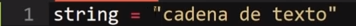
Nota: Los espacios en blanco se conservan dentro de un string, ya que también es considerado un carácter.
Por lo tanto, cualquier carácter que se indique entre comillas será guardado como un string por JavaScript.
Nota: Es posible incluir cualquiera de estas comillas como parte de la cadena de texto, lo único que se requiere es que sean diferentes a las comillas que se estén utilizando para delimitar la cadena de texto en ese momento, por ejemplo si se quiere mostrar comillas simples ('') en la cadena de texto se utilizan comillas dobles ("") o invertidas (``) para delimitar el texto.
Comillas Invertidas (``)
En el caso de los string no hay diferencia entre utilizar comillas simples o dobles, no obstante el uso de las comillas invertidas (``) ofrece ciertas particularidades únicas:
-
Incluir variables dentro de cadenas de texto
Esta es una posibilidad única de las comillas invertidas, así como una forma de concatenación, consiste en definir el texto de la cadena con comillas invertidas (``) y dentro de este incluir la variable utilizando el símbolo de dólar ($) y las llaves ({ }) para delimitar el inicio y fin de esta, de la siguiente forma:
Ejemplo
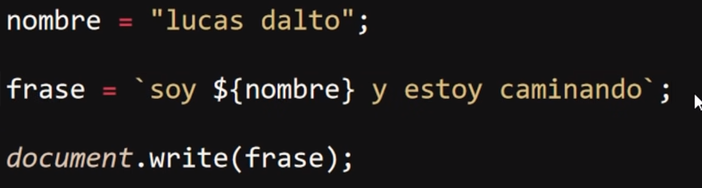
Resultado
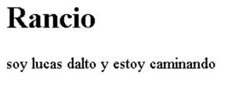
-
Cadenas de texto con salto de líneas
Se trata de otra característica de estas comillas, y es que permiten el incluir el salto de línea como una parte de la cadena de texto:
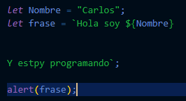
Por lo tanto los saltos de línea conformarán parte de la cadena de texto, generando entonces saltos de línea en el valor final:
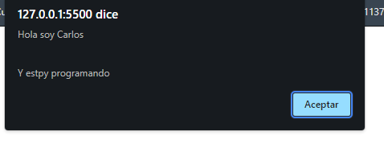
-
Generar código HTML
Las comillas invertidas también permiten almacenar código HTML ejecutable por el navegador, en otras palabras podemos almacenar código HTML dentro de un String y este puede ser ejecutado por el navegador con normalidad, de la siguiente forma:
Ejemplo
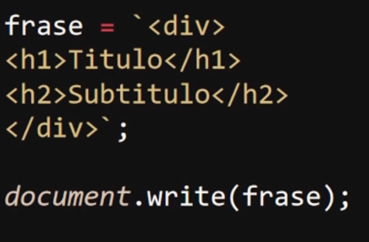
Resultado
Number
-
Estos datos consisten en valores numéricos, para indicarlo como tal simplemente se necesita escribir el número en sí, ya que esta no emplea ningún símbolo para indicarse como number, escribiendo el número por sí solo es la forma correcta de indicar el dato, de la siguiente forma:
Nota: Si se llegase a utilizar comillas al guardar el dato este valor sería tratado como un conjunto de caracteres en vez de un número lo que imposibilitaría su uso en operaciones matemáticas.
boolean
-
Este tercer tipo de dato realmente es más simple, ya que únicamente puede almacenar dos valores los cuales son "true" (el cual indica que un valor es cierto) o "false" (el cual indica que un valor es falso), de la siguiente forma:
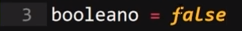
Tipos de Variables y su Alcance (Scope)
Se utilizan palabras clave programadas para indicar la disponibilidad de la variable dentro del bloque de código, esto quiere decir que estas palabras claves definen en qué zonas del código estarán disponibles las variables para los elementos, en JavaScript existen tres tipos de variables, las cuales son:
Let
-
Este tipo de variable establece que esta únicamente estará disponible dentro del bloque de código en la que esta haya sido declarada, por lo tanto no será accesible para todos aquellos elementos que se encuentren fuera de este.
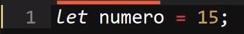
Este es el tipo de variable con el que se recomienda trabajar en la mayoría de los casos ya que al tener menos alcance afecta menos el funcionamiento de los datos.
var
-
Este tipo de variable establece que el dato almacenado en esta estará disponible para todos los elementos del código, independientemente del bloque de código en el que estos se encuentren, por lo que se puede considerar como una "variable Global".
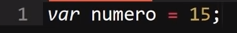
const
-
Se trata de un tipo particular de variable ya que por redundante que sea esta se trata de una variable inalterable, es decir que una vez que sea definido un valor para esta, dicho valor no podrá modificarse nuevamente, por ello se utiliza para almacenar datos que se tengan la certeza de que no cambiarán en ningún momento.
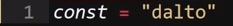
Nota: El intentar modificar una variable "const" resultaría en una alerta de error dentro de la consola de desarrollador.
Declaración, Inicialización y Modificación de una variable
Declarar una Variable
-
Para declarar una variable únicamente es necesario el indicar el nombre y el alcance que tendrá esta, es decir declarar una variable es igual a crearla de forma que esta exista dentro del código pero sin atribuirle ningún valor, resultando en una variable "indefinida" o "undefined", ya que no posee un valor hasta el momento.
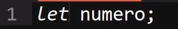
-
Existen dos alternativas a la hora de declarar las variables, esto se puede hacer ya sea declarando varias en una sola declaración utilizando una coma (,) para separar cada variable, ahorrando código de esta forma:
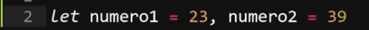
O también se pueden generar una declaración en particular para cada variable priorizando así la indentación del código:
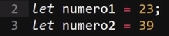
Inicializar una variable
-
Simplemente se trata de asignar un valor a la variable, solo con eso la variable ya se encuentra inicializada.
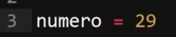
Una característica particular de las "const" es que en estas no es posible declararla e inicializarla por separado, en estas variables es necesario indicar su valor a la vez que estas son declaradas, de lo contrario se generará un error en la consola de desarrollador.
Modificar una Variable
En JavaScript para Modificar una variable simplemente es necesario asignarle un nuevo valor a la variable ya existente.
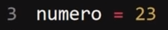
Nota: Recordar que esto solo se puede hacer con las variables "var" y "let", ya que las "const" son inalterables una vez inicializadas.
Casos Especiales de Datos
undefined
-
Se trata de un tipo de dato especial el cual indica que una variable se encuentra declarada pero no ha sido inicializada, es decir que dicha variable existe pero no ha sido asignado ningún dato en esta por lo que se encuentra "sin definir", es decir que hasta el momento no posee un valor.
Null
-
En JavaScript este tipo de dato significa "vacío o nulo" e indica que una variable está definida como nula en alguna circunstancia, por lo que no debe de poseer valor alguno.
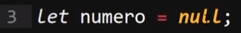
Nota: en JavaScript "Null" significa nula o vacía, sin embargo en algunos lenguajes esto no es así, e indicar una variable como nula o vacía son dos cosas diferentes.
NaN
-
NaN significa "Not a Number" es decir no es un número, este valor especial indica que se está esperando un dato numérico para realizar algún tipo de operación pero en su lugar se está recibiendo algún otro tipo de dato que imposibilita el cálculo, es decir este tipo de valor señala que ha ocurrido un error debido a la recepción de un dato que no es un número.
Arrays
Se tratan de conjuntos de memoria que pueden almacenar múltiples datos y de diversos tipos, en palabras simples un "array" es una variable que no está limitada a almacenar un único dato sino que puede almacenar multitud de estos sin importar el tipo de dato del que sean.
En un "array" los elementos que se almacenen se enumeran según el orden en los que estos sean ingresados, con la particularidad de que se empiezan a enumerar desde el cero (0) y no desde el uno (1) como podría esperarse, por lo tanto el primer elemento en el "array" responde al identificador cero (0), el segundo al identificador (1) y así sucesivamente.
Para declarar un array se indica de la misma forma que con una variable, primero se define su tipo (let, var, const), luego se define el nombre de este seguido del símbolo igual (=), de aquí en más se diferencia de las variables, ya que en lugar de simplemente ingresar los datos es necesario abrir corchetes ([ ]) y dentro de estos se introducen todos los datos que se deseen, separados entre sí por comas (,), de la siguiente forma:
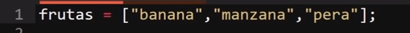
En este ejemplo el dato "banana" (primer dato) ocupa la posición cero (0), "manzana" la posición uno (1) y "pera" la posición dos (2).
Extraer los datos de un Array
Debido a que un array alberga múltiples datos surge la problemática de cómo extraer únicamente el dato que sea necesario para su uso, para esto se utiliza la enumeración de los datos del array, por lo tanto se realiza el llamado del array seguido de corchetes y dentro de estos el número de identificador del dato seleccionado.
Ejemplo
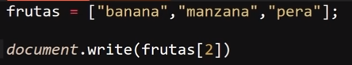
Resultado
En este ejemplo se muestra el tercer dato en pantalla, el cual es enumerado por el número dos (2).
Nota: En el caso de que en este ejemplo se seleccionase el identificador número tres (3) o cualquier otra posición sin asignar un dato, el array retornaría un "undefined", ya que al estar declarado el array todas sus posibles posiciones también lo están, simplemente no se les ha asignado un dato.
Arrays Asociativos
Se trata de un tipo de array con un funcionamiento muy similar al anterior, con la particularidad de que estos le permiten al programador el personalizar la configuración de la numeración de los elementos del array, es decir este tipo de array permite modificar la numeración tradicional (0, 1, 2, ...) y en su lugar definir un nombre para cada elemento del array, por lo tanto para extraer los datos desde un array asociativo es necesario convocar al respectivo dato empleando el nombre definido para este, del mismo modo al ingresar los datos en este también es necesario definir el respectivo nombre de cada dato.
Ejemplo
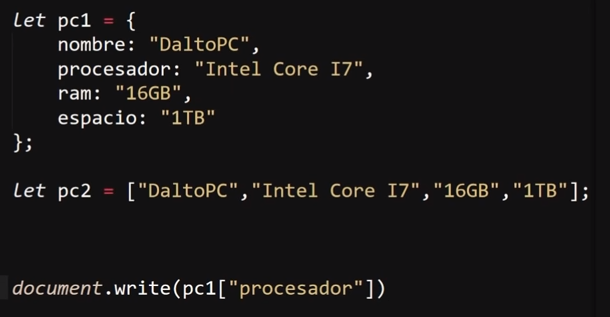
Resultado
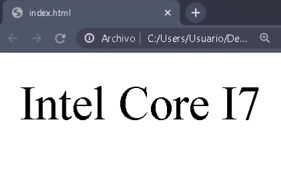
En este ejemplo la variable "pc1" corresponde a un array asociativo, del cual se extrae su segundo dato, el cual está definido con el nombre de "procesador".
En otras palabras del mismo modo que toda variable tiene nombre un array asociativo permite definir un nombre para cada dato dentro de este y convocar el dato utilizando su respectivo nombre y no la numeración del dato.